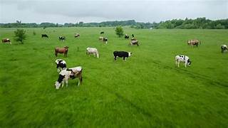
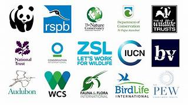

Home
About land Resource:-
Land resources refers to the various physical components of the Earth's surface that are valuable and useful for a wide range of purposes, including human habitation, agriculture, industry, and conservation.
These resources include soil, water, minerals, vegetation, and wildlife, among others.
Land resources play a critical role in supporting ecosystems, providing habitats for diverse species, and serving as the foundation for human activities and development.....
Types of Land:-
1. Arable land: Suitable for cultivation and farming.
2. Pasture and grazing land: Used for livestock and animal grazing.

3. Urban land: Used for residential, commercial, and industrial purposes.
4. Wilderness and conservation land: Preserved for biodiversity and natural habitats.
5. Agricultural land: Used for crop production and farming activities.
6. Desert land: Arid and unsuitable for most types of agriculture.
Importance of Land Conservation
Healthy, productive land not only supports healthy wildlife, but its conservation protects critical processes we depend on to survive.
What Is Land Conservation?
Land conservation focuses primarily on the protection of land from human development. While it is interconnected with wildlife conservation, land conservation focuses more on the land itself rather than directly on the living species that inhabit it.
The goal of land conservation is generally to preserve the land as in its natural state as much as possible, making sure that it stays healthy and can support life well into the future. This often involves preventing certain types of development, but also can include land and habitat restoration or the conversion of developments back into more natural habitats.
How Is Land Conserved?
* Land conservation can take a few different forms, and again can be intertwined with wildlife conservation. However, two of the most important types of entities that participate in conservation are governments and private organizations.
* The US government has many agencies within different departments that are involved in conservation efforts, but one of the most involved in conservation is the Department of the Interior (DOI). The DOI includes agencies like the Bureau of Land Management (BLM), National Parks Service, the US Fish and Wildlife Service, which work for the protection of public lands including things like national forests, monuments, conservation areas, and recreation areas.
* The US Environmental Protection Agency (EPA) is also involved in protecting land in the US, especially through the avenues of preventing pollution and hazardous waste as well as cleanup and restoration of land.
* Governments are in an especially powerful position to impact conservation, as they can create and enforce regulations regarding the development and use of land, and have the power to protect public lands. However, this means that conservation efforts can also vary depending on the administration.
* For example, the US president is the one who determines the director of the BLM. Since the BLM oversees public lands that can potentially be leased for oil and gas exploration, this has caused significant controversy over the protection of the lands versus their sale and the environmental and economic impacts of each decision.

Organizations
* Organizations like the Native American Land Conservancy (NALC), the Nature Conservancy, and the Natural Resources Defense Council (NRDC) all work to preserve and protect land and wildlife and advocate for conservation issues.
* Organizations like these are also integral to protecting privately owned land, and often act as land trusts. Conservation land trusts work with private landowners to prevent development on their land, often through tools like conservation easements.
* When private owners sign an easement, it signs over the rights to developing their land in certain ways to the land trust, who holds the rights in order to conserve the land. This reduces taxes for the landowner as well as protects the land from development in perpetuity, and can be tailored in order to address specific conservation needs while protecting needs of the landowner.

Why Is Land Conservation Important?
# While the development of some land is important for housing, agriculture and other purposes, protecting natural areas and preserving their biodiversity provides countless benefits to our environment and to our health and well-being.
Land Use Planning and Zoning
Introduction:-
This goes without doubt that for development in any field, planning has to be done for framing of an adequate strategy. The same goes for land-use patterns, for development in this field, the concept of land use planning has developed. The concept encompasses the development of policies to effectively regulate the usage of land. This is to be done for maximising the use of the available resources and achieving more desirable outcomes in both social and environmental arena
Land use planning In India:-
* In India, the concept of land use planning developed when the need for planned development of towns and cities was felt. Earlier, the population growth and availability of resources were in consonance with one another and hence there was no need for human planning. However, with an increase in population and depleting resources, the requirement for smart planning of land was felt.
* This majorly happened after India achieved independence. Before that cities were mostly established based on their location with respect to essential resources. For example, cities which were near the coast were established as port cities. However, after independence, the prophecy of using land according to a planned strategy gained importance, to maximise the output using the available resources.

Town planning commences:-
Town planning commenced in India with the establishment of improvements trusts, assigned with the responsibility of checking health care issues. With the passage of time, along with these trusts, municipalities were also established to catalyse this service. The phenomenon of ascertaining a piece of land for certain activities started with these organisations. The most important work that they performed was the formation of theoretical, spatial and sector maps. One immediate benefit of these maps was the systematic collection of taxes on the basis of these artificial boundaries. This can be called the primary form of spatial planning.

Growth of development authorities:-
As the dimensions of cities became more complex, municipalities became insufficient to host these land planning problems. This is when the development authorities came into the picture. These were established specifically for the purpose of city and town planning. Vivid ways were used by these authorities to govern and monitor. These authorities charted out various Town Planning Schemes and Development Plans to ensure development.
Current land use planning schemes In India:-
This concept of town planning being relatively new in India is still struggling to gain attention. However, with the increased realisation of the importance of quality of life, land use planning is gaining attention. Planning at the national level is done by the Planning Commission of India, now renamed NITI Aayog. The five-year plans passed by this commission detailed the allocation of funds to various sectors. Planning of the Urban areas is carried out through various planning schemes. The master plan is one such plan, particularly made for the urban sector development. It is pertinent to note that the most important component of all these schemes is land use planning, as it denotes a spatial nature to a plan. Land use planning, in simple words, here implies, assigning a specific purpose to every piece of land.

The utility of land use planning In India:-
* India, is the best example of a rapidly developing country, with a consistently rising GDP. A major chunk of the population still involves itself in agricultural work, however, there has been a stark rise in the number of people migrating from villages and towns to cities. Due to this development, there has been a rapid rise in urbanisation. For managing the limited resource and land in urban areas and making this rapid urbanisation systematic, land use planning in India becomes an utmost necessity.
* Therefore, land-use planning is done in India primarily to divide areas for specific purposes. Then the areas which are assigned the specific tasks would do nothing but those activities. This is done to maximise the utility of the overall land and negate the possibility of repetition of the use of land for the same activity. It also stops any other future negative impact.
Constitutional provisions for land use planning
# Following are the provisions made in the constitution for the purpose of land use planning
Seventh schedule:-
* The constitution of India in its seventh schedule provides for land use planning. It assigns the responsibility to both the state and centre to look into this matter. Entry 19 of the State list provided in the seventh schedule, assigns the task of enacting laws and policies to the state legislatures. Also, the seventh schedule empowers the centre to make policies and legislations for development of defence infrastructure, railways, interstate rivers, industries etc.
74th Constitutional amendment:-
* By this constitutional amendment, spatial planning was introduced in the constitution. Section 243ZD and 243ZE, which were added via this amendment provided for spatial planning in District and Metropolitan Area Development Plans. Thus, spatial planning can be rightly termed as a constitutional obligation.
Land use planning at national level:-
As provided in the seventh schedule, the central government has a responsibility for national-level land use planning. The tasks which are to be fulfilled by the central government are as follows:
1 Framing of policies and programmes.
2 Construing model acts.
3 Framing of land use planning and development guidelines.
Conclusion:-
It is evident from the reading of the above-stated facts regarding the various policy initiatives and constitutional and legislative provisions that land use planning is firmly based in India. Also, various efforts have been made by the central government and the governments of various states to enhance and adorn these policies with the improved infrastructure potentials of this country. These should be updated taking into consideration improvement in technology.
Sustainable Land Management Practices:-
The United Nations defines sustainable land management (SLM) as “the use of land resources, including soils, water, animals and plants, for the production of goods to meet changing human needs, while simultaneously ensuring the long-term productive potential of these resources and the maintenance of their environmental functions”.
TerrAfrica (2005) defines SLM as “the adoption of land-use systems that through appropriate management practices enable land users to maximize the economic and social benefits from the land while maintaining or enhancing the ecological support functions of the land resources”.
The productivity and sustainability of a land-use system is determined by the interaction between land resources, climate and human activities. Especially in the face of climate change and variability, selecting the right land uses for given biophysical and socio-economic conditions, and implementing SLM, are essential for minimizing land degradation, rehabilitating degraded land, ensuring the sustainable use of land resources (i.e. soils, water and biodiversity) and maximizing resilience.
SLM is based on four principles:
1 Targeted policy and institutional support, including the development of incentive mechanisms for SLM adoption and income generation at the local level.
2 Land-user-driven and participatory approaches.
3 The integrated use of natural resources on farms and at the ecosystem scale.
4 Multilevel, multistakeholder involvement and partnerships at all levels – land users, technical experts and policy-makers.
FAO’s SLM mandate and comparative advantage
* FAO has a mandate to: support its member countries and partners in developing or reforming norms, standards and policies; provide technical advice; and implement national and local programmes through capacity development and technical knowledge management activities.
* FAO implements a range of SLM-related programmes and approaches, such as farmer field schools; conservation agriculture; catchment- and farm-scale approaches to integrated land and water management and land husbandry; gestion des terroirs and local land-use planning; integrated plant and pest management; and sustainable forest management.
* FAO is the custodian UN agency for 21 indicators of the Sustainable Development Goals (SDGs), cutting across SDGs 2, 5, 6, 12, 14 and 15, and it is a contributing agency to four other SDG indicators. FAO has a strong comparative advantage in its capacity to assist countries in meeting the monitoring challenge posed by the SDGs. Activities are under way for country-level collaboration in the development of indicators for land; land degradation; soils; drought; sustainable forests and mountains; sustainable land management; water efficiency and scarcity; women’s access to land ownership; food losses and waste; and others.
* FAO is executing a number of projects, funded by the Global Environment Facility (GEF), addressing transboundary land degradation issues, including: “Integrated Management of the Fouta Djallon Highlands”; “Globally Important Agricultural Heritage Systems”; “Transboundary Agro-ecosystem Management Programme for the Kagera Basin”; “Using Farmer Field School Approaches to Overcome Land Degradation in Agropastoral Areas of Eastern Kenya”; and “Integrated Natural Resources Management in Drought-prone and Salt-affected Agricultural Production Landscapes in Central Asia and Turkey” (CACILM2) (in development).
* FAO also implements integrated land resource planning strategies through a wide range of complementary SLM approaches, tools and measures adapted to different biophysical and socio-economic contexts.
* Land degradation and desertification threaten the food security and livelihoods of millions of people, especially in drylands. Promisingly, after many decades of on-the-ground work on SLM approaches and practices, many SLM options are available for reversing these negative trends. FAO is prioritizing the identification of affected communities and target areas for implementing locally suitable SLM options for managing land resources with the overall goal of scaling up SLM over large areas.
* FAO-developed similarity analyses are used to match areas of interest with areas where farmers have tested, fine-tuned and implemented SLM technologies and where water and land management packages might be applied. Professionals, planners and decision-makers can use the information and products generated from these analyses to identify the most suitable SLM practices and technologies for targeted areas and communities. ILM and land resource planning are other tools for supporting decision-makers and land users in choosing suitable land uses and SLM practices for local biophysical and socio-economic circumstances.
Announcing new SLM projects
* FAO launched the GEF-supported project, “Decision Support for Scaling up and Mainstreaming Sustainable Land Management (DS-SLM)” in September 2015. The project has 15 participating countries in Africa (Lesotho, Morocco, Nigeria and Tunisia), East and South Asia (Bangladesh, China, the Philippines and Thailand), Europe and Central Asia (Bosnia and Herzegovina, Turkey and Uzbekistan), and South and Central America (Argentina, Colombia, Ecuador and Panama). FAO provides technical support, alongside the project’s main scientific partner, the World Overview of Conservation Approaches and Technologies (WOCAT) Consortium, the secretariat of which is located in the Centre for Development and Environment at Bern University.
* The DS-SLM project builds on existing SLM practices and experiences in target landscapes in each partner country by scaling up and mainstreaming strategies and actions, supported by a global knowledge management platform on SLM and ILM. The project will make relevant tools and methods available for planning, management, monitoring and impact assessment and by sharing experiences within and between regions, and it will develop and test strategic guidance and approaches for scaling up and mainstreaming. In particular, the project will build capacity in the 15 partner countries in three interlinked components: 1) national and local decision support for combating desertification, land degradation and drought (DLDD) and promoting the mainstreaming and scaling up of SLM best practices; 2) the development of a global DLDD and SLM knowledge management and decision-support platform; and 3) monitoring and evaluation, impact assessment, and the dissemination of project results.
Land Resource Conservation Initiatives:-
The preservation of land assets is the security of standard land assets. This is accomplished by wiping out or palliative the human result on auto chthonic habitats, the capable assembling of land assets, furthermore preservation that means to show around human hurt to land assets. Accordingly, this pace of debasement of land should be checked. conversion, land recovery, managed use of substance chemicals and manures, and minds overgrazing area unit a little of the conventional ways accustomed save land assets. The developing public and their steady developing interest have prompted an enormous scope annihilation of timber cowl and productive land and has created a sense of dread toward losing this traditional plus.
Land preservation approaches are unit upheld by government associations just as us Department of Agriculture and also the Environmental Protection Agency. These ecological laws area unit came to stay organizations, businesses, and residents from creating any hurt to our indispensable land assets. Individuals and state area units beginning to attend dynamic lengths to forestall ecological annihilation caused by folks. Owing to the means that some land has simply had minor aggravations and alternative land has been all wiped out, an associate assortment of procedures area unit expected to complete land protection. absolutely the most traditional procedures incorporate remedy, reclamation, safeguarding so forth.
Remediation is the commonest means of cleansing a contaminated region utilizing typically mild or nondestructive techniques. the first objective of remedy is to scrub and restore the tarnished region whereas inflicting as very little aggravation or mischief as can be expected. Researchers ofttimes utilized an associate assortment of techniques for remedy, as well as a compound, physical, and natural ways to eliminate uncleanness.
One more technique utilized in land preservation is reconstruction, which is the commonest means of returning environments and networks to their distinctive traditional circumstances. To restore a biological system, analysis ought to first examine the flow climate and do research to choose the verifiable states of the setting. Safeguarding the climate implies that grounds and their traditional assets ought not to be consumed by folks and need to otherwise be well-kept within their excellent structure. Preservationists firmly settle that individuals will approach the land but need to simply use it for its regular magnificence and motivation.
What is Conservation of Land Resources?
\
* Conservation of land resources is the sustainable use and management of land resources. It includes the conservation of soil, water, plants, and animals. Conservation of land resources helps to protect the environment and to ensure that there is enough food and water for future generations.
* There are many ways to conserve land resources. One way is to reduce or stop the use of harmful chemicals. This can be done by using organic farming methods, using less water for irrigation, or using more efficient irrigation methods. Another way to conserve land resources is to prevent or reduce soil erosion. This can be done by planting trees or shrubs on steep slopes, terracing fields, or by using mulch. Still another way to conserve land resources is to reduce deforestation. This can be done by planting trees in areas that have been deforested, protecting natural forests, or by reforestation.
* The best way to conserve land resources is to use them wisely and responsibly. We can all do our part to help conserve land resources by being aware of the ways we impact the environment and making choices that will help protect it.
Need for Conservation of Land Resources
* It is estimated that humans have impacted over 60% of the world’s land surface. With the world’s population projected to increase by 2 billion people by 2050, the need for the conservation of land resources has never been greater. The demand for food, water, and energy will continue to rise, putting even more pressure on our limited land resources.
* So what can be done to conserve land resources? One solution is to improve efficiency in agriculture, which currently uses 70% of the world’s land surface. This can be done through a variety of methods such as precision agriculture, no-till farming, and agroforestry. Another solution is to set aside more land for nature conservation. This can be done through initiatives such as rewilding and creating protected areas.
* Both individuals and governments have a role to play in conserving land resources. Everyone can help by reducing their consumption of meat and dairy products (which require large amounts of land for grazing and crop production), choosing products made from sustainable materials (such as bamboo or recycled plastic), and supporting initiatives to protect natural habitats. Governments can help by implementing policies that encourage sustainable land use practices and investing in research and development for new technologies that help us live more sustainably on this planet.
Importance of Conservation of Land Resources
* It is important to conserve land resources for a variety of reasons. First, the land is a finite resource, meaning that there is a limited amount of it available on Earth. Second, land resources provide essential ecosystem services, such as food production, water filtration, and flood control. Third, the conservation of land resources can help mitigate the effects of climate change. Fourth, healthy ecosystems are necessary for human health and well-being. Finally, land resources are key to the economic development of countries and regions.
* The first reason to conserve land resources is that they are finite. There is only so much land available on Earth, and it is not possible to create more. This means that if we want to maintain our current standard of living, we need to use the land wisely and conserve it for future generations.
* Second, land resources provide essential ecosystem services without which humans could not survive. These services include food production, water filtration, and flood control. Ecosystems also provide other benefits such as recreation and tourism opportunities and carbon sequestration.
* Third, the conservation of land resources can help mitigate the effects of climate change by preserving or increasing carbon sinks such as forests. Additionally, healthy ecosystems are more resilient to climate change impacts such as floods and droughts. Fourth, human health depends on healthy ecosystems. For example, many people get their drinking water from rivers or aquifers that are recharged by forested watersheds.
Traditional Ways Accustomed Ration Land Assets
1 Land recovery: Land recovery is the extra strategy for method creating new land structure ocean, riverbeds so forth for ranchers to preserve land.
2 Afforestation: Establishing a lot of trees will facilitate the timber cowl.
3 Keeps an eye fixed on overgrazing: Overgrazing will reduce ground cowl, empowering disintegration and compaction of the land by wind and waterspout. This lessens the capability for plants to develop and water to enter, which damages soil microorganisms and ends up in the real disintegration of the land.
4 Managed use of artificial chemicals and composts: Cycle of creating the ranchers educated with regard to the negative components of overuse of manures and substance pesticides.
5 Keeps an eye fixed on overgrazing: Overgrazing will reduce ground cowl, empowering disintegration and compaction of the land by wind and waterspout. This decreases the capability for plants to develop and water to enter, which damages soil microorganisms and ends up in the real disintegration of the land